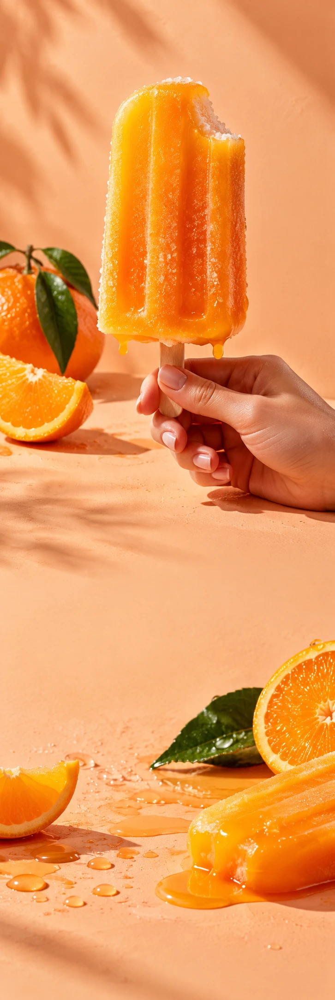

FRESCO POP
IJs & treatsSmaaklancering
FRESCO POP / THE SUNNY BITE
HALLO ZON.
HAPJE ERBIJ?
Bekijk de fruitpops FRESCO POP / VAN DICHTBIJ
Een klein hapje.
Een grote zomer.
Een frisse smaak. Een koud stokje in je hand. En een excuus om even in het zonlicht te blijven staan. Ontdek onze vrolijkste fruit-edit.
01Mandarijn
02Frisse hap
03Zon erbij
LAAT MAAR
EVEN SMELTEN.
Voor de pauze die naar buiten wil.
Bekijk de fruitpops